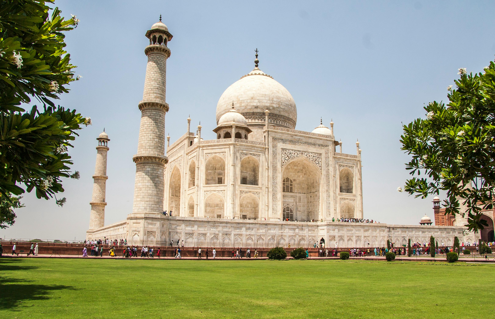

TRIP PLANING
Everything we have seen.

Construction of the mausoleum was completed in 1648, but work continued on other phases of the project for another five years. The first ceremony held at the mausoleum was an observance by Shah Jahan, on 6 February 1643, of the 12th anniversary of the death of Mumtaz Mahal. The Taj Mahal complex is believed to have been completed in its entirety in 1653 at a cost estimated at the time to be around ₹5 million, which in 2023 would be approximately ₹35 billion (US$77.8 million).
The building complex incorporates the design traditions of Indo-Islamic and Mughal architecture. It employs symmetrical constructions with the usage of various shapes and symbols. While the mausoleum is constructed of white marble inlaid with semi-precious stones, red sandstone was used for other buildings in the complex similar to the Mughal era buildings of the time. The construction project employed more than 20,000 workers and artisans under the guidance of a board of architects led by Ustad Ahmad Lahori, the emperor's court architect.
The Taj Mahal was designated as a UNESCO World Heritage Site in 1983 for being "the jewel of Islamic art in India and one of the universally admired masterpieces of the world's heritage". It is regarded as one of the best examples of Mughal architecture and a symbol of Indian history. The Taj Mahal is a major tourist attraction and attracts more than five million visitors a year. In 2007, it was declared a winner of the New 7 Wonders of the World initiative.
The name "Taj Mahal" is of Urdu origin, and believed to be derived from Arabic and Persian, with the words tāj mahall meaning "crown" (tāj) "palace" (mahall).[4][5][6] Abdul Hamid Lahori, in his book from 1636 Padshahnama, refers to the Taj Mahal as rauza-i munawwara (Perso-Arabic: روضه منواره, rawdah-i munawwarah), meaning the illumined or illustrious tomb.[7] The name "Taj" might have been derived from the corruption of the second syllable of "Mumtaz".[8][9]